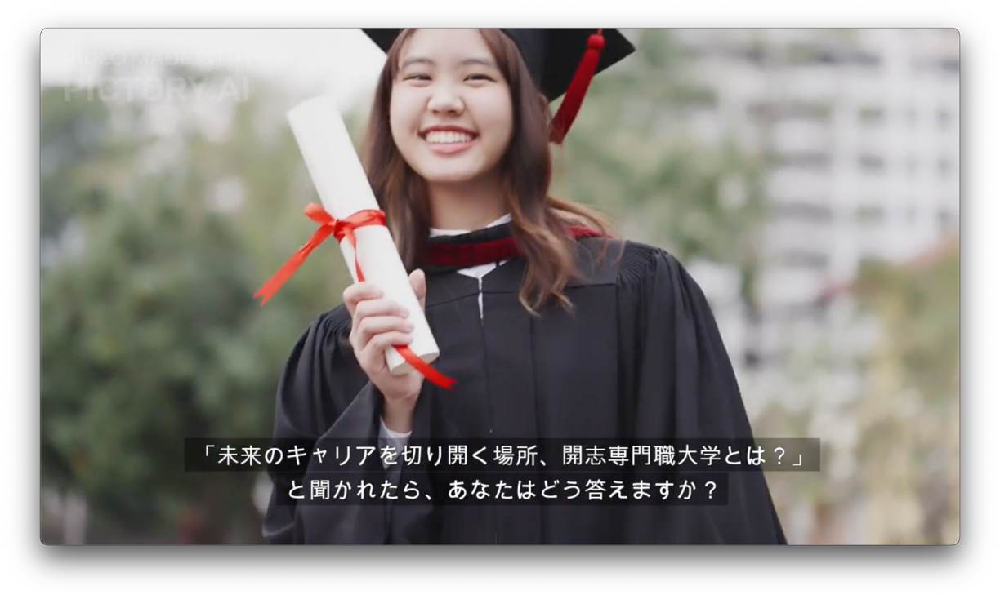
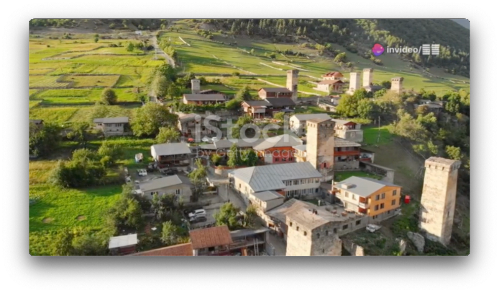
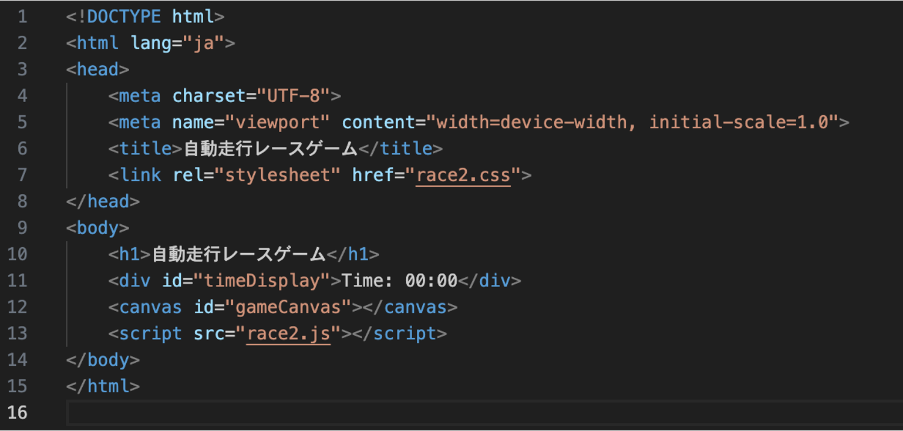
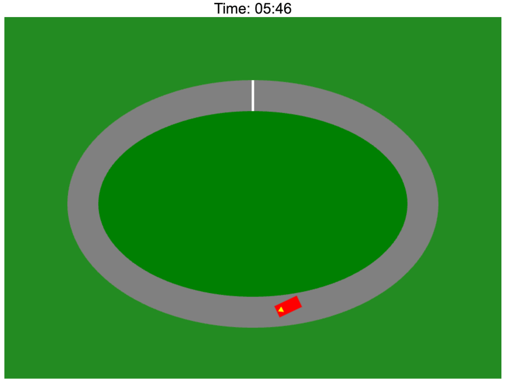

開志専門職大学情報学部2年 近藤楓恋です。
新潟市中央区出身
2004年8月18日生まれ
大学では、IoT・ロボティックスエンジニアコースを履修しており、情報分野を中心にAIやIoT、プログラミングなど様々な分野を学んでいます。
希望制のインターンシップとは異なり、この大学の授業の必修科目として全員が参加する臨地実務実習(インターンシップ)があります。 この授業は、2年生で150時間(約5週間)、3年生で450時間(約15週間)で合計で600時間以上の実習があります。 社会人・企業人に必要な心構えや姿勢、課題解決力など座学では得られないリアルな学びをビジネスの現場で直接学び、目指す業界のプロとして求められる実践力・応用力を身につけることを目的としています。
URL: https://kaishi-pu.ac.jp/internship/
今回の臨地実務実習Iでは、株式会社新潟人工知能研究所(NAIL)の実習に参加し,生成AIを用いたプロジェクトに取り組み、音楽や画像生成、動画生成など様々な分野の実習に取り組みました。
実習で取り組んだプロジェクトの一部
概要: インターネット上で提供されている動画生成AIサービスについて、広範囲かつ詳細な調査を行い、それぞれのサービスの特徴、性能、使いやすさ、および実用性を評価する。
使用したツール
Pictory.AI:開志専門職大学ホームページのURLをコピペして、大学の紹介動画を作成した。
Inviedo AI: ChatGPTにシナリオを作成して、それをもとにトピック、言語、詳細な指示を与えた上で、自然豊かな村を旅する若者の物語の動画を生成した。
上記の画像は、Pictory.AIで作成した開志専門職大学の紹介動画
上記の画像は、Inviedo AIで作成した自然豊かな村を旅する若者の物語
概要:既存の俯瞰型レースゲームを基に、自動で走行する車両を実装。この自動走行車両は、楕円形のコースを一周完走することを主な目標とし、さらに可能な限り速くコースを周回することを目指す。
使用したツール:Visual Studio Code(HTML ,CSS, JavaScript)
生成AIにプログラム作成を行い、途中で何回か調整を行い、画面例に近くなるように修正を行なった。
上記の画像は、Visual Studio Codeで作成したHTMLのソースコード
実際の画面例
Email: 20123022@kaishi-pu.ac.jp
電話: 080-4125-0818